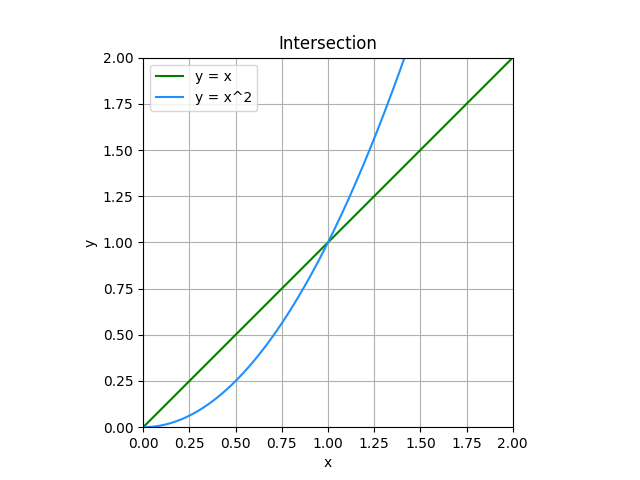
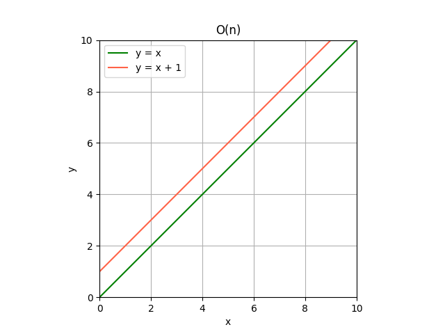
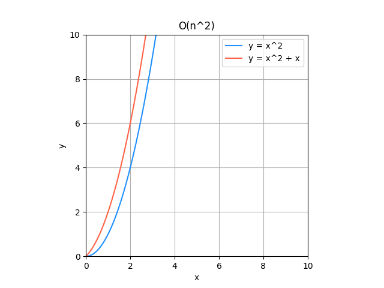
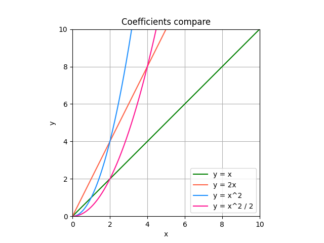

Big O notation rules
Only big numbers are taken into account
We are looking how this algorithm complexity grows with number of inputs, so we are looking to the numbers close to infinity. So the case close to 0 should be ignored. We don’t care that linear and quadratic has intersection at 1.
{kind=link}
When you add function, the less growing part could be ignored
Does y = x grow faster when y = x + 1, or y = x2 grows faster when y = x2 + x?
You can see that actually they grow pretty the same. So we can simplify. Always drop the parts that grows slower.
 {kind=link}
{kind=link}
Before |
After |
|---|---|
O(n) + O(1) |
O(n) |
O(n2) + O(n) |
O(n2) |
O(n2) + O(n2) |
2O(n2), O(2n2) |
Coefficient does not matter
Even on that small plot x2 / 2 overrun 2x. So we could just drop coefficients, because they do not make huge difference.
{kind=link}
Before |
After |
|---|---|
O(2n) |
O(n) |
2O(n) |
O(n) |
2O(n2) |
O(n2) |
O(2n2) |
O(n2) |
Keep it simple
Before |
After |
|---|---|
aO(n2) + bO(n) + c |
O(n2) |
Summary
Complexity is not the execution time, you can drop less significant part easily. The same rules that are used for comparing the functions between themself are used to simplify them.